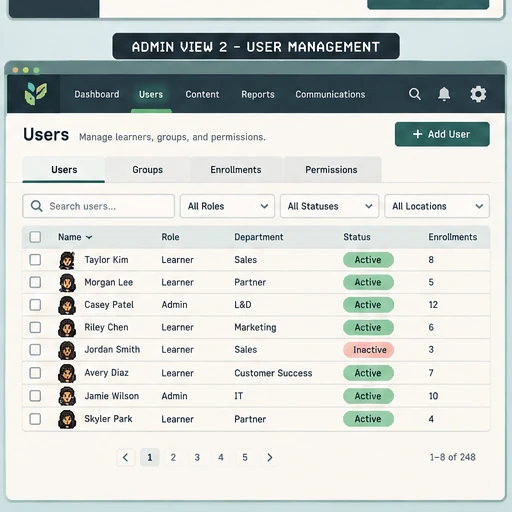

Audience, objective, risk, and outcome.
Learning Platform Operations
LMS Administration
I make learning delivery reliable from the rules that determine access to the records teams rely on afterward. I connect learner experience, platform architecture, release management, support, and reporting so learning programs scale without becoming a patchwork of manual work.
Absorb + DoceboAudience ArchitectureRelease ValidationData Integrity
Different Sides of LMS Administration
Four operating layers shape the learner experience.
Administration sets the rules, delivery makes learning available, and support reveals what to improve. I connect all three through access, content, data, and governance.
User + Access Architecture
Design access as the learner’s first experience.
I translate profiles, group membership, permissions, audience rules, enrollment logic, and exception paths into an experience that puts the right learning in front of the right person.

Operational standardThe same learner attributes consistently resolve to the intended permissions, audience, and learning path.
My L&D Methodology
Start with the learning need. Design the system around it.
The platform choice changes the configuration, but not the questions I ask about who needs to learn, what they must do, and what evidence will show it worked.
Groups, access, paths, rules, and ownership.
Find, launch, practice, and complete.
Trust the record; act on exceptions.
Audience + path: groups, role expectations, prerequisites, and catalog routes should follow learner needs, not just the org chart.
Content + experience: formal courses, live sessions, assessments, microlearning, and job aids need the right access, navigation, and version rules.
Measurement + scale: reporting should answer a useful business question; reusable rules and automation should reduce manual exceptions without hiding them.
Learner Journey + Record Integrity
I validate the full learner transaction, from identity to reporting.
A working package is not enough. I test how learner identity, access, assignment, launch, completion, records, and reports stay connected, and where an exception needs a clear owner.
Identity
Confirm the learner record resolves to the right person and operating context.
I validate profile fields, matching keys, department or group placement, role, and SSO or login path before downstream rules depend on them.
Platform Approach
Different platforms, different design decisions.
One LMS pattern does not fit every audience. Compare how I would design for extended enterprise, corporate core, academic cohorts, and a SharePoint knowledge portal, then switch among eight platform examples.
Explore my approach to LMS platforms →System Integrations
I map the data contract around the LMS before extending the workflow.
I trace source ownership, matching keys, field rules, validation, exceptions, and maintenance responsibility before identity, business data, content standards, credentials, reporting, or automation move through the system.
Identity + Access
Treat identity fields as operational dependencies, not profile decoration.
User IDs, email, role, department, region, SSO attributes, and group membership can drive access and assignment logic. I identify which system owns each value, what key links the records, and what exception path exists when the data does not resolve cleanly.
Source of truthIdentity / user recordValidationThe same user resolves to the expected role, group, and access state.
Business systemCRM / HR / identity
Sync or exportMatch + validate
LMSActivity + record
DatasetReconcile status
DecisionDashboard / sheet
Direct work
Mappings, exports, reconciliation, exceptions.
My projects include course and enrollment crosswalks, Salesforce-to-Absorb account updates using a reviewed browser workflow, multi-export certification reporting, and post-launch exception follow-up.
See a connected workflow →Relevant integration methods
Choose the connection the data needs.
Depending on the platform: SSO / SAML / Okta for identity; SCORM or xAPI for learning events; file or SFTP feeds, REST APIs, and webhooks for records and automation; SQL or warehouse datasets and Power BI for downstream analysis. These are capability examples, not all personal implementation claims.
Spotlight · System Integrations
Connected Learning Systems
How data moves into, through, and out of the LMS.
Explore the system-integration layer behind learning operations: identity, CRM and HR data, content standards, credentials, reporting, APIs, automation, matching keys, exception handling, and maintenance ownership.
Open the System Integrations Spotlight →Featured LMS Case Study
Migration work across configuration, UAT, and launch support.
See how I mapped existing structures, configured and validated the target experience, tested employee, partner, and customer routes, documented issues, and supported launch.
View the case study →Other Work
The platform is one part of the learning system.
These portfolio sections show the learning, quality, and automation work connected to the LMS.
Learning Experience
Instructional Design
Course, pathway, microlearning, live-training, and performance-support work built around learner decisions.
Explore instructional design →AI Quality
AI Training and Evaluation
Output evaluation, evidence validation, rubric scoring, calibration, and actionable evaluator feedback.
Explore AI evaluation →Systems + Automation
System Integrations and Workflows
Automation, analysis, browser workflows, and reporting that support learning operations.
Explore systems work →